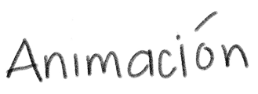

Animación
Animation-duration:
Especifica cuanto tiempo debe transcurrir una animacion para completar un ciclo
Animation-iteration-count:
Especifica un retrado para el inicio de la animacion y se expresa en segundos
Animation-play-state:
Especifica si la animacion se esta ejecutando o esta en pausa
Animation-timing-function:
Especifica la curva de velocidad de la animacion
Linear:
Especifica una animacion con la misma velocidad de principio a fin
Ease:
Especifica una animación con un inicio lento, luego rapido y luego termina lento
Ease-in:
Especifica una animacion con ciclo lento
Ease-out:
Especifica una animacion con un final lento
Ease-in-out:
Especifica una animacion con inicio y final lento
Cubic-bezier:
Permite definir sus propios valores en una funcion
None:
La animacion no aplicara ningun estilo antes y despues
Forwards:
El elemento retendra los valores de estilo establecidos por el ultimo fotograma clave
Backwards:
El elemento obtendra los valores de estilo establecidos por el primer fotograma clave
Both:
La animacion seguira las reglas tanto para adelante como para atras
Animation:
Propiedad rapida para configurar todas las propiedades de la animacion
Pseudoclases
nth-child
La pseudoclase nth-child() nos permite encontar un hijo especifico
nth-child (odd) :nth-child (even)
Las palabras clave odd y even se usan para seleccionar elementos con base en su posicion en la secuencia de hijos
first-child
Referencia solo el primer hijo
only-child
Afecta un elemento siempre y cuando sea el unico hijo disponible
not()
Declara una excepcion, los estilos en la regla creada con esta pseudoclase seran asignados a todo elementos excepto aquellos incluidos en la referencia
Selector de atributo:
Un selector de atributo en CSS selecciona elementos HTML en funcion de la presencia o el valor de uno de sus atributos.
Atributo^=
Una regla con el selector ^= selecciona elementos cuyo atributo comienza con un valor especifico
Atributo$=
Una regla con el selector $= sleecciona elementos cuyo atributo termina con un valor especifico
Atributo*=
Una regla con el selector *= selecciona elementos cuyo atributo contiene uan cadena especifica en cualquier posicon
Selectores de relacion:
Permiten seleccionar elementos basados en su relacion con otros elementos dentro del documento
Selector de hijos directos ( < )
Selecciona elementos que son hijos inmediatos de un elemento padre
Selector de hermanos adyacentes (+)
Selecciona un elemento que es hermano inmediato
Selector de hermanos generales (~)
Selecciona todos los elementos que son hermanos de un elemento anterior,
Resumen
.png)